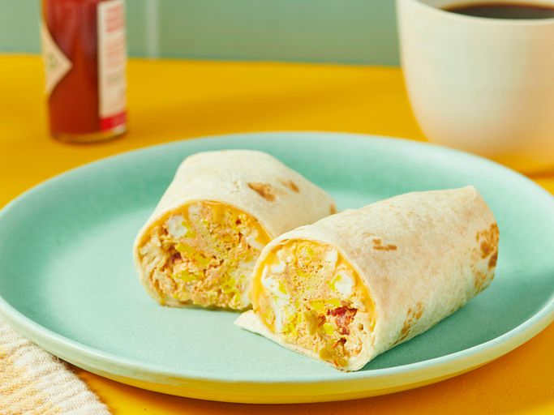

One-Minute Breakfast Burrito

Description
Breakfast burritos are some of the easiest recipes to start your day, and this recipe takes that factor of easiness to another level by removing the need for stoves, pans, and everything else. Instead, we're taking this bad boy to the microwave and back!
Ingredients
- Two (2) large eggs
- Two (2) tablespoons of salsa
- One (1) slice of American cheese of your choice
- One (1) tortilla
Steps
- Gather all of your ingredients.
- Spray a medium-sized bowl with nonstick cooking spray, then crack your eggs into the bowl. Add salsa to the bowl and stir the mixture.
- Microwave the eggs and salsa on high for one minute, stir, then cook the mixture for another minute (or until it firms up).
- Place your slice of cheese in the middle of your tortilla, then top it with your egg-and-salsa mixture.
- Wrap the tortilla and its fillings in the style of a burrito, then enjoy!
Home